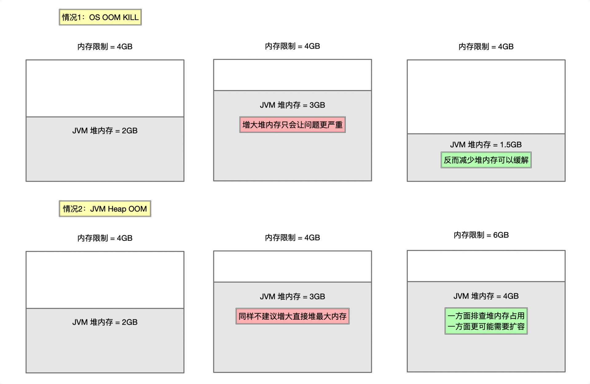

- 00 开篇词 业务代码真的会有这么多坑？.md.html
- 01 使用了并发工具类库，线程安全就高枕无忧了吗？.md.html
- 02 代码加锁：不要让“锁”事成为烦心事.md.html
- 03 线程池：业务代码最常用也最容易犯错的组件.md.html
- 04 连接池：别让连接池帮了倒忙.md.html
- 05 HTTP调用：你考虑到超时、重试、并发了吗？.md.html
- 06 2成的业务代码的Spring声明式事务，可能都没处理正确.md.html
- 07 数据库索引：索引并不是万能药.md.html
- 08 判等问题：程序里如何确定你就是你？.md.html
- 09 数值计算：注意精度、舍入和溢出问题.md.html
- 10 集合类：坑满地的List列表操作.md.html
- 11 空值处理：分不清楚的null和恼人的空指针.md.html
- 12 异常处理：别让自己在出问题的时候变为瞎子.md.html
- 13 日志：日志记录真没你想象的那么简单.md.html
- 14 文件IO：实现高效正确的文件读写并非易事.md.html
- 15 序列化：一来一回你还是原来的你吗？.md.html
- 16 用好Java 8的日期时间类，少踩一些“老三样”的坑.md.html
- 17 别以为“自动挡”就不可能出现OOM.md.html
- 18 当反射、注解和泛型遇到OOP时，会有哪些坑？.md.html
- 19 Spring框架：IoC和AOP是扩展的核心.md.html
- 20 Spring框架：框架帮我们做了很多工作也带来了复杂度.md.html
- 21 代码重复：搞定代码重复的三个绝招.md.html
- 22 接口设计：系统间对话的语言，一定要统一.md.html
- 23 缓存设计：缓存可以锦上添花也可以落井下石.md.html
- 24 业务代码写完，就意味着生产就绪了？.md.html
- 25 异步处理好用，但非常容易用错.md.html
- 26 数据存储：NoSQL与RDBMS如何取长补短、相辅相成？.md.html
- 27 数据源头：任何客户端的东西都不可信任.md.html
- 28 安全兜底：涉及钱时，必须考虑防刷、限量和防重.md.html
- 29 数据和代码：数据就是数据，代码就是代码.md.html
- 30 如何正确保存和传输敏感数据？.md.html
- 31 加餐1：带你吃透课程中Java 8的那些重要知识点（一）.md.html
- 32 加餐2：带你吃透课程中Java 8的那些重要知识点（二）.md.html
- 33 加餐3：定位应用问题，排错套路很重要.md.html
- 34 加餐4：分析定位Java问题，一定要用好这些工具（一）.md.html
- 35 加餐5：分析定位Java问题，一定要用好这些工具（二）.md.html
- 36 加餐6：这15年来，我是如何在工作中学习技术和英语的？.md.html
- 37 加餐7：程序员成长28计.md.html
- 38 加餐8：Java程序从虚拟机迁移到Kubernetes的一些坑.md.html
- 答疑篇：代码篇思考题集锦（一）.md.html
- 答疑篇：代码篇思考题集锦（三）.md.html
- 答疑篇：代码篇思考题集锦（二）.md.html
- 答疑篇：加餐篇思考题答案合集.md.html
- 答疑篇：安全篇思考题答案合集.md.html
- 答疑篇：设计篇思考题答案合集.md.html
- 结束语 写代码时，如何才能尽量避免踩坑？.md.html
38 加餐8：Java程序从虚拟机迁移到Kubernetes的一些坑
你好，我是朱晔，我们又见面了。结课并不意味着结束，我非常高兴能持续把好的内容分享给你，也希望你能继续在留言区与我保持交流，分享你的学习心得和实践经验。
使用 Kubernetes 大规模部署应用程序，可以提升整体资源利用率，提高集群稳定性，还能提供快速的集群扩容能力，甚至还可以实现集群根据压力自动扩容。因此，现在越来越多的公司开始把程序从虚拟机（VM）迁移到 Kubernetes 了。
在大多数的公司中，Kubernetes 集群由运维来搭建，而程序的发布一般也是由 CI/CD 平台完成。从虚拟机到 Kubernetes 的整个迁移过程，基本不需要修改任何代码，可能只是重新发布一次而已。所以，我们 Java 开发人员可能对迁移这个事情本身感知不强烈，认为 Kubernetes 只是运维需要知道的事情。但是程序一旦部署到了 Kubernetes 集群中，在容器环境中运行，总是会出现各种各样之前没有的奇怪的问题。
今天的加餐，就让我们一起看下这其中大概会遇到哪些“坑”，还有相应的“避坑方法”。
Pod IP 不固定带来的坑
Pod 是 Kubernetes 中能够创建和部署应用的最小单元，我们可以通过 Pod IP 来访问到某一个应用实例，但需要注意的是，如果没有经过特殊配置，Pod IP 并不是固定不变的，会在 Pod 重启后会发生变化。
不过好在，通常我们的 Java 微服务都是没有状态的，我们并不需要通过 Pod IP 来访问到某一个特定的 Java 服务实例。通常来说，要访问到部署在 Kubernetes 中的微服务集群，有两种服务发现和访问的方式：
通过 Kubernetes 来实现。也就是通过 Service 进行内部服务的互访，通过 Ingress 从外部访问到服务集群。
通过微服务注册中心（比如 Eureka）来实现。也就是服务之间的互访通过客户端负载均衡后 + 直接访问 Pod IP 进行，外部访问到服务集群通过微服务网关转发请求。
使用这两种方式进行微服务的访问，我们都没有和 Pod IP 直接打交道，也不会把 Pod IP 记录持久化，所以一般不需要太关注 Pod IP 变动的问题。不过，在一些场景下，Pod IP 的变动会造成一些问题。
之前我就遇到过这样的情况：某任务调度中间件会记录被调度节点的 IP 到数据库，随后通过访问节点 IP 查看任务节点执行日志的时候，如果节点部署在 Kubernetes 中，那么节点重启后 Pod IP 就会变动。这样，之前记录在数据库中的老节点的 Pod IP 必然访问不到，那么就会发生无法查看任务日志的情况。
遇到这种情况，我们应该怎么做呢？这时候，可能就需要修改这个中间件，把任务执行日志也进行持久化，从而避免这种访问任务节点来查看日志的行为。
总之，我们需要意识到 Pod IP 不固定的问题，并且进行“避坑操作”：在迁移到 Kubernetes 集群之前，摸排一下是否会存在需要通过 IP 访问到老节点的情况，如果有的话需要进行改造。
程序因为 OOM 被杀进程的坑
在 Kubernetes 集群中部署程序的时候，我们通常会为容器设置一定的内存限制（limit），容器不可以使用超出其资源 limit 属性所设置的资源量。如果容器内的 Java 程序使用了大量内存，可能会出现各种 OOM 的情况。
第一种情况，是 OS OOM Kill 问题。如果过量内存导致操作系统 Kernel 不稳定，操作系统可能就会杀死 Java 进程。这时候，你能在操作系统 /var/log/messages 日志中找到类似 oom_kill_process 的关键字。
第二种情况，是我们最常遇到的 Java 程序的 OOM 问题。程序超出堆内存的限制申请内存，导致 Heap OOM，后续可能会因为健康检测没有通过被 Kubernetes 重启 Pod。

在 Kubernetes 中部署 Java 程序时，这两种情况都很常见，表现出的症状也都是 OOM 关键字 + 重启。所以，当运维同学说程序因为 OOM 被杀死或重启的时候，我们一定要和运维同学一起去区分清楚，到底是哪一种情况，然后再对症处理。
对于情况 1，问题的原因往往不是 Java 堆内存不够，更可能是程序使用了太多的堆外内存，超过了内存限制。这个时候，调大 JVM 最大堆内存只会让问题更严重，因为堆内存是可以通过 GC 回收的。我们需要分析 Java 进程哪部分区域内存占用过大，是不是合理，以及是否可能存在内存泄露问题。Java 进程的内存占用除了堆之外，还包括
直接内存
元数据区
线程栈大小 Xss * 线程数
JIT 代码缓存
GC、编译器使用额外空间
……
我们可以使用 NMT 打印各部分区域大小，从而判断到底是哪部分内存区域占用了过多内存，或是可能有内存泄露问题：
java -XX:NativeMemoryTracking=smmary/detail -XX:+UnlockDiagnosticVMOptions -XX:+PrintNMTStatistics
如果你确认 OOM 是情况 2，那么我同样不建议直接调大堆内存的限制，防止之后再出现情况 1。我会更建议你把堆内存限制为容器内存限制的 50%~70%，预留出足够多的内存给堆外和 OS 核心。如果需要扩容堆内存的话，那么也需要同步扩容容器的内存 limit。此外，也需要通过 Heap Dump（你可以回顾下第 35 讲的相关内容）等手段来排查为什么堆内存占用会这么大，排除潜在的内存泄露的可能性。
内存和 CPU 资源配置不适配容器的坑
刚刚我们提到了，堆内存扩容需要结合容器内存 limit 同步进行。其实，我们更希望的是，Java 程序的堆内存配置能随着容器的资源配置，实现自动扩容或缩容，而不是写死 Xmx 和 Xms。这样一来，运维同学可以更方便地针对整个集群进行扩容或缩容。
对于 JDK>8u191 的版本，我们可以设置下面这些 JVM 参数，来让 JVM 自动根据容器内存限制来设置堆内存用量。比如，下面配置相当于把 Xmx 和 Xms 都设置为了容器内存 limit 的 50%：
XX:MaxRAMPercentage=50.0 -XX:InitialRAMPercentage=50.0 -XX:MinRAMPercentage=50.0
接下来，我们看看 CPU 资源配置不适配容器的坑，以及对应的解决方案。
对于 CPU 资源的使用，我们主要需要注意的是，代码中的各种组件甚至是 JVM 本身，会根据 CPU 数来配置并发数等重要参数指标，那么：
如果这个值因为 JVM 对容器的兼容性问题取到了 Kubernetes 工作节点的 CPU 数量，那么这个数量可能就不是 4 或 8，而是 128 以上，进而导致并发数过高。
对于 JDK>8u191 的版本可能会对容器兼容性较好，但是其获取到的 Runtime.getRuntime().availableProcessors() 其实是 request 的值而不是 limit 的值（比如我们设置 request 为 2、limit 为 8、CICompilerCount 和 ParallelGCThreads 可能只是 2），那么可能并发数就会过低，进而影响 JVM 的 GC 或编译性能。
所以，我的建议是：
第一，通过 -XX:+PrintFlagsFinal 开关，来确认 ActiveProcessorCount 是不是符合我们的期望，并且确认 CICompilerCount、ParallelGCThreads 等重要参数配置是否合理。
第二，直接设置 CPU 的 request 和 limit 一致，或是对于 JDK>8u191 的版本可以通过 -XX:ActiveProcessorCount=xxx 直接把 ActiveProcessorCount 设置为容器的 CPU limit。
Pod 重启以及重启后没有现场的坑
除非宿主机有问题，否则虚拟机不太会自己重启或被重启，而 Kubernetes 中 Pod 的重启绝非小概率事件。在存活检测不通过、Pod 重新进行节点调度等情况下，Pod 都会进行重启。对于 Pod 的重启，我们需要关注两个问题。
第一个问题是，分析 Pod 为什么会重启。
其中，除了“程序因为 OOM 被杀进程的坑”这部分提到的 OOM 的问题之外，我们还需要关注存活检查不通过的情况。
Kubernetes 有 readinessProbe 和 livenessProbe 两个探针，前者用于检查应用是否已经启动完成，后者用于持续探活。一般而言，运维同学会配置这 2 个探针为一个健康检测的断点，如果健康检测访问一次需要消耗比较长的时间（比如涉及到存储或外部服务可用性检测），那么很可能可以通过 readinessProbe 的检查但不通过 livenessProbe 检查（毕竟我们通常会为 readinessProbe 设置比较长的超时时间，而对于 livenessProbe 则没有那么宽容）。此外，健康检测也可能会受到 Full GC 的干扰导致超时。所以，我们需要和运维同学一起确认 livenessProbe 的配置地址和超时时间设置是否合理，防止偶发的 livenessProbe 探活失败导致的 Pod 重启。
第二个问题是，要理解 Pod 和虚拟机不同。
虚拟机一般都是有状态的，即便部署在虚拟机内的 Java 程序重启了，我们始终能有现场。而对于 Pod 重启来说，则是新建一个 Pod，这就意味着老的 Pod 无法进入。因此，如果因为堆 OOM 问题导致重启，我们希望事后查看当时 OS 的一些日志或是在现场执行一些命令来分析问题，就不太可能了。
所以，我们需要想办法在 Pod 关闭之前尽可能保留现场，比如：
对于程序的应用日志、标准输出、GC 日志等可以直接挂载到持久卷，不要保存在容器内部。
对于程序的堆栈现场保留，可以配置 -XX:+HeapDumpOnOutOfMemoryError -XX:HeapDumpPath 在堆 OOM 的时候生成 Dump；还可以让 JVM 调用任一个 shell 脚本，通过脚本来保留线程栈等信息：
-XX:OnOutOfMemoryError=saveinfo.sh
对于容器的现场保留，可以让运维配置 preStop 钩子，在 Pod 关闭之前把必要的信息上传到持久卷或云上。
重点回顾
今天，我们探讨了 Java 应用部署到 Kubernetes 集群会遇到的 4 类问题。
第一类问题是，我们需要理解应用的 IP 会动态变化，因此要在设计上解除对 Pod IP 的强依赖，使用依赖服务发现来定位到应用。
第二类问题是，在出现 OOM 问题的时候，首先要区分 OOM 的原因来自 Java 进程层面还是容器层面。如果是容器层面的话，我们还需要进一步分析到底是哪个内存区域占用了过多内存，定位到问题后再根据容器资源设置合理的 JVM 参数或进行资源扩容。
第三类问题是，需要确保程序使用的内存和 CPU 资源匹配容器的资源限制，既要确保程序所“看”到的主机资源信息是容器本身的而不是物理机的，又要确保程序能尽可能随着容器扩容而扩容其资源限制。
第四类问题是，我们需要重点关注程序非发布期重启的问题，并且针对 Pod 的重启问题做好现场保留的准备工作，排除资源配置不合理、存活检查不通过等可能性，以避免因为程序频繁重启导致的偶发性能问题或可用性问题。
只有解决了这些隐患，才能让 Kubernetes 集群更好地发挥作用。
思考与讨论
在你的工作中，还遇到过 Java+Kubernetes 中的其他坑吗？
我是朱晔，欢迎在评论区与我留言分享，也欢迎你把今天的内容分享给你的朋友或同事，一起交流。